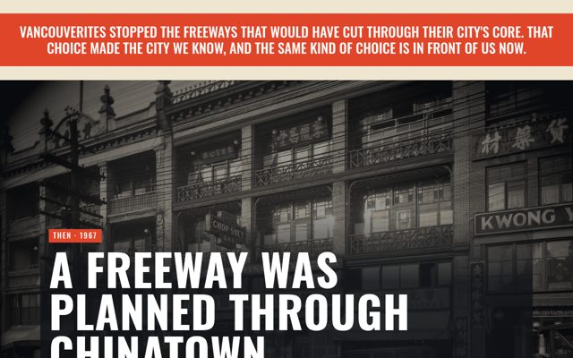
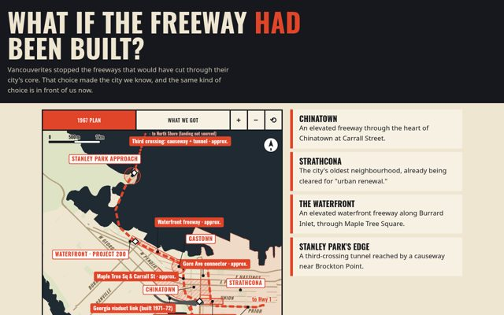
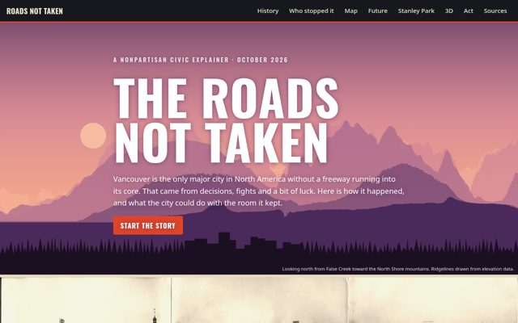

Choose how to explore
The same story six ways, from a 30-second read to the full history.

Then / Now / Next
Three big moments in 30 seconds, followed by the evidence.
Scroll the story →
What if?
Flip between the freeway city that was planned and the city we got.
Compare →

The full story
The plan, who stopped it, what grew instead, and what's next.
Read →


The interactive map
Unbuilt freeways, neighbourhoods, transit and Stanley Park in layers.
Open the map →